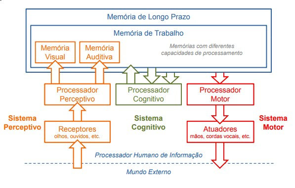
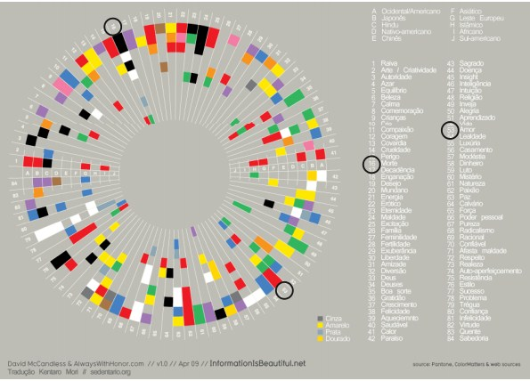

Processador Humano de Informação

Características Pré Atencionais
Conjunto de características processadas antes que uma pessoa volte sua atenção para elas uma pessoa volte sua atenção para elas
Exemplos:
Luminância
Cor
Forma
Movimentos simples
Profundidade estereoscópica
Percepção de Luminância
Luminância é percebida da mesma forma por indivíduos com visão normal e daltônicos
Ordenação é executada sem instrução adicional
Contraste ideal para texto deve representar uma razão de 10:1
Percepção de Cores
Cores opostas são especiais em todas as sociedades
Vermelho, verde, amarelo, azul, preto e branco
Entretanto o significado é cultural
